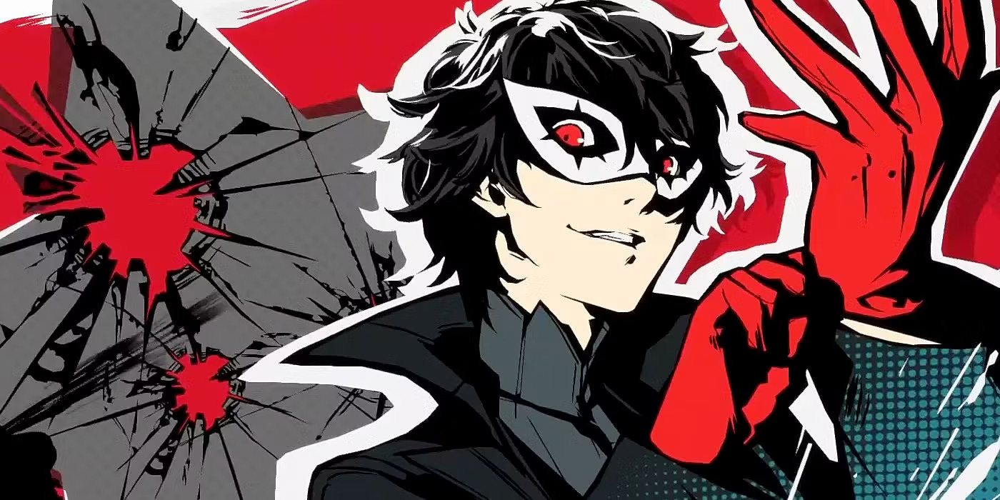
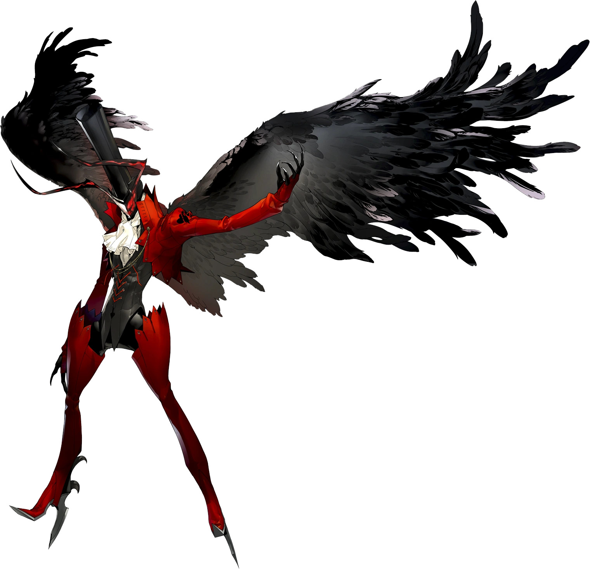
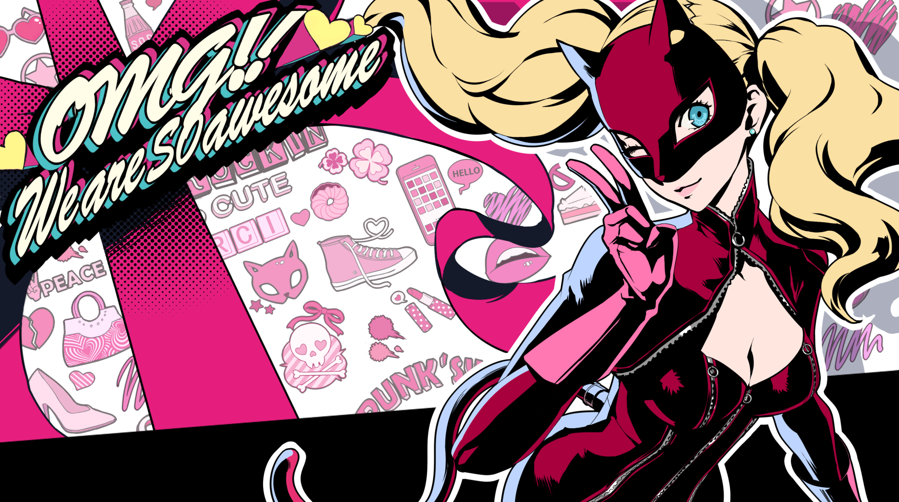
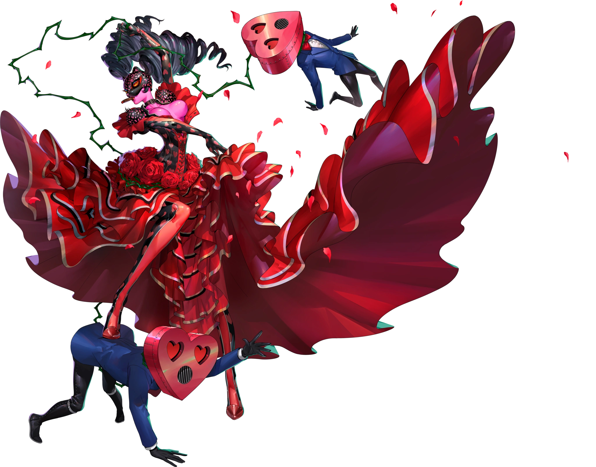
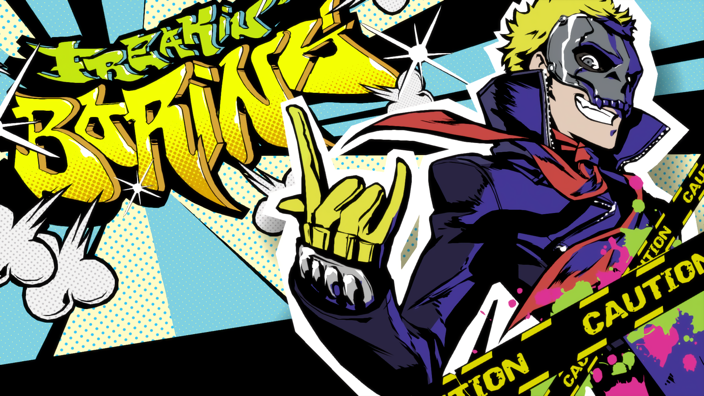
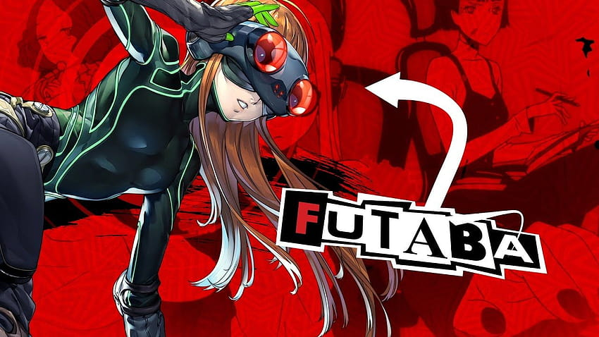
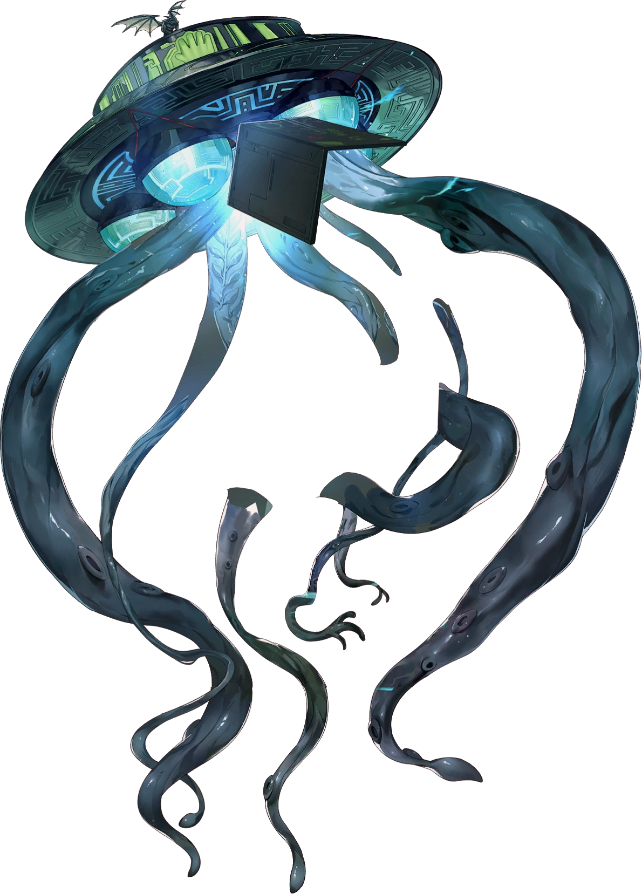

| (☆▽☆) |
Information |
Persona |
|  |
Ren Amamiya, also known as the Joker, is the leader of the Phantom Thieves. He is also a second-year transfer student at Shujin Academy, being placed there to continue his academics due to his ongoing probation resulting from being falsely framed for assault. |
 |
|  |
Ann Takamaki is also known as the Panther. After ridden with guilt over her helplessness to protect others and herself, which led to her letting her best friend Shiho Suzui fall victim to Suguru Kamoshida, she would sacrifice herself to support her friends while facing, overcoming and promising not to return back to her old self. |
 |
|  |
Ryuji Sakamoto is a student at Shujin Academy and a former track star who lives a double life as a Phantom Thief. He is the protagonist's best friend and the Phantom Thieves' charge commander. |
 |
|  |
Futaba Sakura is the Navigator of the Phantom Thieves from Persona 5. She is different from the main crew of the Phantom Thieves, as prior to Persona 5 Strikers, she was a shut-in who does not attend school and rarely, if ever, leaves her house. |
 |